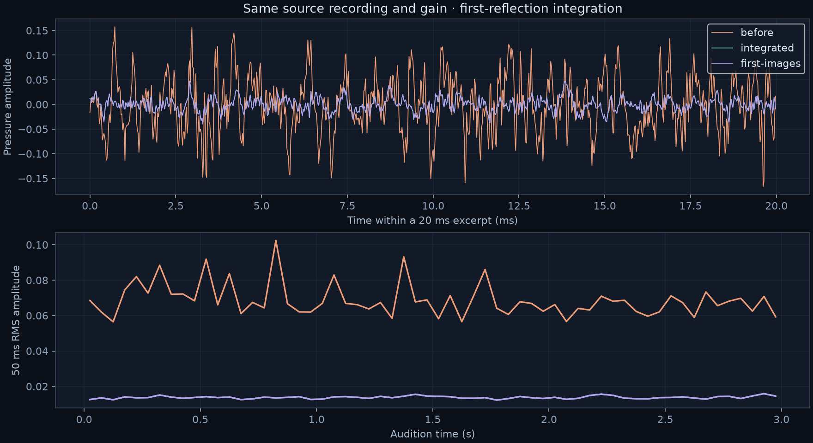

ACOUSTIC LAB / RUNTIME INTEGRATION
Rain with every first reflection
Same 98 recorded rain sources, same canopy, listener and gain. Each audible first reflection now reaches the production audio renderer with its own delay and direction. These three-second clips use a common scale, with no normalization.
This integrates first reflections. The complete multi-edge solver is still unresolved. The third clip is an independent direct + first-reflection control, not full wave ground truth.
Before
Original rain renderer: two primitive samples per frequency bin, with probability compensation.
Integrated
All 84 triangle candidates checked. Each valid first reflection retained. Existing 32-interaction walk preserved.
First-reflection control
Independent geometric calculation of direct sound and 73 valid first mirrors. Excludes higher-order scattering.

| Same 6.5 s render | Before | Integrated |
|---|
Offline host timings on shared hardware, one run per version. Transport includes completion/readback; audio includes synthesis and delivery. Wall time includes 20% work pacing. These are not realtime or universal speedup measurements. Diffraction is disabled in both renders, matching the original rain take.